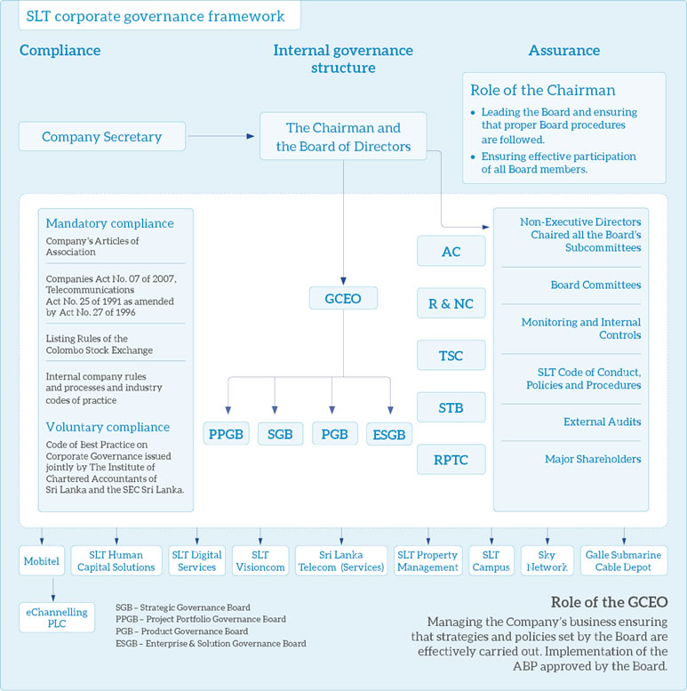
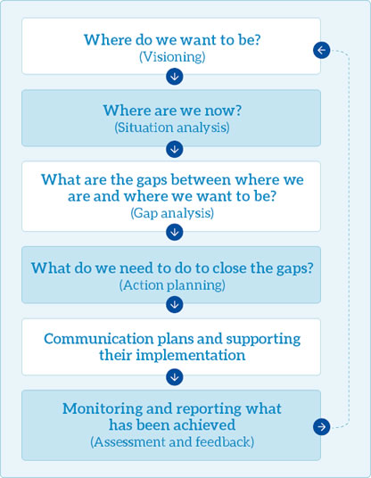

Corporate governance
Corporate governance is the system of common rules, practices and processes under which companies can operate effectively. It generally focuses on the composition and workings of Company Boards and the engagement with shareholders, but also looks at the relationships companies have with other stakeholders. It covers factors such as having appropriate internal controls in place to mitigate and manage risks and making use of Independent Non-Executive Directors with different perspectives to challenge and develop Company strategy.
The Board of Directors of Sri Lanka Telecom PLC (“SLT") firmly believes that strong governance underpins a healthy culture, and demonstrate good practice in the Boardroom and promote good governance throughout the business. The importance of contextual factors has been recognised by those who have attempted to measure the effectiveness of corporate governance.
SLT’s corporate governance philosophy is in full compliance with the following framework of legislation, codes and voluntary practices:
- Articles of Association (“AoA”) of the Company
- Legislation, particularly the Companies Act No. 07 of 2007, Telecommunication Act No. 25 of 1991 as amended by Act No. 27 of 1996
- Listing Rules of the Colombo Stock Exchange
- Internal company rules and processes and industry codes of practice
- Code of Best Practice on Corporate Governance issued jointly by the Institute of Chartered Accountants of Sri Lanka and the Securities and Exchange Commission of Sri Lanka.

The Board of Directors
Composition of the Board
The Board comprised eight Non-Executive Directors with six of them being independent. The independence of the Directors has been determined in accordance with the requirements of the CSE Listing Rules.
Providing strategic leadership
The Board is aware of both internal and external issues, short-term pressure and longer-term trends and development. The Board, while addressing certain current issues in strategic planning and contemporary issues and challenges in order to remain competitive, provide strategic directions leading the road ahead and visioning. They plan for the future while being flexible when changes are required.
Key steps in Board’s processes on development and strategic leadership:

Ownership and Directors
As per the shareholding structure of the Company, two major shareholders namely the Government of Sri Lanka acting through the Secretary to the Treasury and Global Telecommunication Holdings N.V. recommend five and four Directors respectively to the Board. The Board as empowered by the AoA of the Company appoints them to the Board filling the casual vacancies after their qualifications, experience and expertise in relevant functional areas is deliberated by the R&NC. However, all Directors are required by the Company's AoA to be elected by shareholders at the first AGM after their appointment, if appointed by the Board. A Director must also retire by rotation and may seek re-election at the AGM if he or she was last elected or re-elected at or before the AGM held in the third year before the year in question.
The role of the Board
The Board is responsible for the overall conduct of the Group’s business towards the success of the Company. They act within the powers and authority as vested in it by and pursuant to the relevant laws of the Country and the AoA of the Company.
The Board:
- establishes vision, mission, values, objectives and policies
- sets business plans , financial directions and strategy
- ensures appropriate structure/capability
- delegates to management and control
- is accountable to shareholders for the proper conduct of business
Other specific responsibilities are delegated to Board committees which operate within clearly defined Terms of Reference. Details of the responsibilities and operations of the Subcommittees are given on pages 100 to 102.
Operation of the Board
The Board met seven times during the year. These meetings, together with seven Committee meetings, are generally held within a period of three to four days according to the annual meeting calendar which is agreed by all the Directors. The meetings focus on the overall strategic direction, development and control of the Company.
The Chairman, along with the Group Chief Executive Officer (“GCEO”) and the Company Secretary, ensures that the Board functions effectively and has established Board processes designed to maximise its performance and effectiveness.
Key aspects of these processes are:
- All Directors receive accurate, relevant, timely clear and balanced information in order to ensure informed deliberation and effective decision-making. Briefing papers are distributed to the Directors usually four days prior to the meeting. The Board papers are made available in electronic format keeping in line with the Group’s sustainability initiatives.
- The GCEO along with the respective Chief Officers and the Heads of Division present their submissions to the Board and provide the necessary clarifications requested by the Board.
- The Directors all being NEDs are able to access independent professional advice whenever it is required at the Company’s expense.
- The Directors have access to the advice and services of the Company Secretary, who advises the Board on appropriate procedures for the management of meetings and their duties, as well as the implementation of corporate governance and compliance with the requirement of the Companies Act, Listing Rules of the CSE and the Articles of Association of the Company.
The attendance of individual Directors at Board meetings and Committee meetings during the year is set out in the table below:
| Meetings attended as a percentage | |||||||
| Board member | Status | Board | Audit Committee | Remuneration & Nomination Committee | Technology Subcommittee | Senior Tender Board | Related Party Transactions Review Committee |
| Mr Sirisena Kumarasinghe – Chairman | INED | 7/7 | – | 5/5 | – | – | – |
| Mr Chan Chee Beng | NED | 6/7 | 3/6 | 5/5 | – | – | 2/3 |
| Mr Lawrence Michael Paratz | INED | 7/7 | – | 5/5 | 8/8 | 7/7 | – |
| Ms Lai Choon Foong | INED | 7/7 | 8/8 | – | – | 7/7 | 4/4 |
| Ms Chandra Ekanayake (Resigned w.e.f. 1 August 2017) | NED | 3/3 | 4/5 | – | – | – | 2/2 |
| Ms Nilanthi Pieris | INED | 7/7 | 7/8 | – | – | 7/7 | 4/4 |
| Mr W K H Wegapitiya | INED | 5/7 | – | – | 0/8 | 0/4 | – |
| Mr Rohan De Silva (Resigned w.e.f. 19 December 2017) | INED | 2/6 | 2/6 | – | 0/8 | 0/7 | 2/3 |
| Mr A R Desapriya (Appointed w.e.f. 3 October 2017 | NED | 3/3 | 1/1 | – | – | – | – |
NED: Non-Executive Director.
INED: Independent Non-Executive Director.
Delegation to Board subcommittees
SLT has in place a number of mandatory and voluntary Board Subcommittees to fulfil regulatory requirements and for better governance of its activities. These committees comprise Directors who bring their expertise and experience to the assigned committees and the duties are set out in formal Terms of Reference which is available for inspection at the Company’s registered office during normal business hours.
| Committee | Composition and role | Meeting frequency |
Audit Committee |
The Audit Committee (“AC”) comprise Non–Executive Directors majority of whom are independent. The Chairperson of the Committee is a member of a recognised accounting body. |
A minimum of four meetings per annum and at such other times as the Chairman of the Committee shall require. |
Remuneration and Nomination Committee |
The Remuneration and Nomination Committee (“R&NC”) comprises Non–Executive Directors majority of whom are independent. |
Atleast once a year and at such other times as the Chairman of the Committee shall require. |
Related Party Transactions Review Committee |
The Related Party Transactions Review Committee (“RPT – RC”) comprises Non–Executive Directors of whom two Directors were independent. The Chairperson of the Committee is an Independent Director.
|
Minimum of four meetings per annum and at such other times as the Chairman of the Committee shall require. |
Technology Subcommittee |
The Technology Subcommittee (“TSC”) comprises Independent Non–Executive Directors.
|
As and when required |
Senior Tender Board |
The Senior Tender Board (“STB”) comprises Non – Executive Directors.
|
Prior to every Board meeting |
Independence of Directors and segregation of duties
Non-Executive Directors provide an independent and clear voice for key interested Groups as a formal part of the Board structure by means of directly inputting that voice into the boardroom discussion.
They do not hold shares in the Company and have not worked in an executive capacity for the Company or any subsidiaries of the Company.
Their biographies on pages 82 to 86 of the Annual Report demonstrate a range of experience and sufficient calibre to bring the independent judgement on issues of strategy, performance, resources and standards of conduct which is vital to the Group.
Indemnities to Directors
In accordance with the AoA of the Company, Directors are granted an indemnity from the Company to the extent permitted by law in respect of liabilities incurred as a result of the performance of their duties in their capacity as Directors to the Company. The indemnity would not provide any coverage to the extent the Director is proven to have acted fraudulently or dishonestly. The Company has maintained Directors’ and officers’ liability insurance cover throughout the year.
Appointment and re-election of Directors
In accordance with the AoA of the Company, all Directors except the Chairman of the Board are required to retire and submit themselves for re-election at least every three years following their appointment or re-appointment. In addition, the Directors appointed by the Board during the year and before signing of this Report offer themselves for re-election at the forthcoming AGM.
Role of the Chairman and Group Chief Executive Officer
Distinction between strategic and operational matters is clearly established in terms of division of responsibility of the Chairman and the Chief Executive. The Chairman of SLT is a Non-Executive appointment and is responsible for leading the Board effectively ensuring that it meets its obligations and responsibilities. He ensures that Board procedures are followed and all Board members effectively participate during meetings.
The Chief Executive is responsible for the day-to-day management of the business, leadership of the executive team and execution of the Group’s strategic and operating plans. The Chairman and the Chief Executive meet regularly to discuss any issues pertaining to the Company’s performance, human resources aspects and operational matters.
The Company Secretary
The Company Secretary acts as Secretary to the Board and the Committees of the Board.
The role of the Company Secretary includes:
- co-ordinating and advising the Board on the correct Board procedure to be followed and the corporate governance matters and Directors’ duties;
- playing legal, formal and informal support roles;
- assisting the Chairman in ensuring that all Directors have full and timely access to all relevant information;
- administering the procedure under which Directors can, where appropriate, obtain independent professional advice at the Company’s expense;
- organising pre-meetings, agendas, minutes and follow-up action;
- engaging with stakeholders and co-ordinating the shareholder issues and investor relations;
The appointment or removal of the Company Secretary is a matter for the Board as a whole.
Internal control and risk management
The Board ensures that internal controls and risk management are properly established and maintained through the Audit Committee whose responsibility is to oversee the internal control and risk management. The Board is directly involved in assessing the risks associated with the business and of the Company through the risk management process. There is established continual monitoring built into work processes assessing new and potential risks from bottom-up flow.
Strategic Governance Boards (“SGB”)
Strategic Governance Boards comprising of the GCEO and the Chief Officers of each functional area are given the responsibility of studying the requirements of cross functional areas and introducing solutions in a transparent manner.
Code of Conduct and practice
SLT has a Code of Conduct that applies to all employees and third parties who deal with the Company. The Code sets out principles to guide employees in carrying out their duties and responsibilities to the highest standards of personal and corporate integrity when dealing with SLT, its competitors, customers, suppliers and the community. The processes and standards in the Code are intended to enhance investor confidence and rapport, and to ensure that decision making is properly carried out in the best interests of the Group. The Code covers areas such as equal opportunity employment practices, workplace health and safety, conduct in the workplace, business conduct, protection of SLT’s assets, proprietary information and intellectual property, data protection, confidentiality, conflict of interest, and non-solicitation of customers and employees. The Code is posted on SLT’s internal website. Policies and standards are clearly stipulated to guide employees in carrying out their daily tasks.
Material contracts
There are no material contracts entered into by SLT or any of its subsidiaries that involve the interests of the Group CEO, any Director, or the controlling shareholders, Secretary to the Treasury and the Global Telecommunications Holdings NV.
Remuneration
SLT’s Group CEO is the head of the management and is, therefore, remunerated as part of Senior Management. The R&NC recommends the salary package of the GCEO to commensurate with his qualifications and experience for the approval of the Board. The GCEO’s performance is assessed based on the key performance indicators agreed upon at the time of entering into the fixed term contract with the Company.
Remuneration of Non-Executive Directors
The R&NC reviews and proposes the Non-Executive Director’s fees based on the experience and skills of the Directors and the complexity of the Group’s business and operations, for the approval of the Board
The fees for Non-Executive Directors other than the Chairman comprised a basic monthly fee for attendance of Board and Board’s subcommittee meetings. Additional fee is not paid for Directors for attending Subcommittee meetings.
The cost of travelling and accommodation incurred by the overseas Directors who were required to travel out of their country to attend Board and subcommittee meetings are reimbursed.
The aggregate Directors’ fees paid to Non-Executive Directors for the financial year ended 31 December 2017 was Rs. 12 million.
Mr W K H Wegapitiya, has declined to accept a Director fee and offered his monthly Director fee to a charitable organisation.
Remuneration of Senior Management
The remuneration framework and policy is designed to support the implementation of the Group’s strategy and to enhance shareholder value.
The following are the principles for remuneration to Senior Management:
- Select appropriate performance metrics for annual and long-term incentive plans to support business strategies and ongoing enhancement of shareholder value
- Offer competitive packages to attract and retain highly experienced and talented individuals
- Link a significant proportion of remuneration to performance, both on an annual and long-term basis
Constructive use of the Annual General Meeting
The Board use the Annual General Meeting to communicate with investors and all shareholders are encouraged to participate. The Chairpersons of the subcommittees are available at the AGM to answer any questions from the shareholders.
Major transactions
The Board of Directors, as required by the Companies Act, to disclose to shareholders all proposed corporate transactions detailing all facts associated with such transactions that are of material value to SLT. There were no major transactions entered into by SLT for the year 2017.
Related party transactions
The Board of Directors has applied the rules issued by the CSE on related party transactions throughout its decision making process to avoid any conflicts of interest that may occur. The Board has recognised the importance of a Related Party Transactions Review Committee under the Board of Directors to enhance corporate transparency and promote fair transactions between SLT and its subsidiaries.
The Company has a related party relationship with its subsidiaries disclosed in Note 34 to the Notes to the Financial Statements. However, the Board believes those transactions are exempted in accordance with exceptions specified in the Listing Rules. All these are recurrent transactions and are in the ordinary course of business of the Company.
Statement of compliance
SLT is fully compliant with the requirements stipulated in Section 7.10 on “Corporate Governance” of the Continuing Listing Requirements of the Colombo Stock Exchange issued in 2010 and subsequent amendments/guidelines thereto issued by the Securities and Exchange Commission of Sri Lanka. See the tables on pages 106 and 107 for the rules on “Corporate Governance Principles” and the degree of compliance to the said rules.
In addition, the Board of Directors to the best of their knowledge and belief is satisfied that all statutory payments due to the Government, other regulatory bodies and those payments related to employees of SLT, have been made within the stipulated period.
| Statement of Compliance under the Rules of CSE on Corporate Governance | |||
| CSE Rule No. | CSE Rule | Compliance Status | SLT Action |
|
7.10. a, b, c |
Compliance
|
|
SLT is in compliance with the Corporate Governance Rules |
|
7.10.1 a, b, c |
Non-Executive Directors (“NED”)
|
|
All Directors are Non-Executive Directors |
|
7.10.2 |
Independent Directors (“ID”) |
||
|
(a) |
Two or 1/3 of NEDs, whichever is higher, should be independent |
|
Five out of the seven NEDs are considered Independent |
|
(b) |
Each NED should submit a declaration annually of his/her independence or non- independence |
|
All NEDs have submitted signed declaration confirming their independence/non-independence |
|
7.10.3 |
Disclosures relating to Directors |
||
|
(a) (b) |
The Board shall annually determine the independence or otherwise of the NEDs Names of the IDs should be disclosed in the Annual Report |
|
The Board annually determines as to the independence or non – independence of each NED based on the declaration submitted by them and the names of the independent directors are set out in the Annual Report |
|
(c ) |
A brief resume of each Director should be included in the Annual Report including the Directors’ experience |
|
Brief profile of Directors are indicated in the Board of Directors section of the Annual Report |
|
(d) |
Provide a brief resume of newly appointed Directors to CSE |
|
Detailed resumes of any Director appointed during the year are submitted to the CSE |
|
7.10.4 |
Determination of Independence |
||
|
(a-h) |
Requirements for meeting the criteria to be an Independent Director |
|
The Independence of the Board of Directors has been determined in accordance with the requirements of the CSE Listing Rules. Accordingly, five NEDs are considered Independent
|
|
7.10.5 |
Remuneration Committee (“RC”) |
||
|
(a) |
Composition
|
|
RC comprises of three NEDs out of whom two are Independent |
|
One NEDs shall be appointed as Chairman of the Committee by the Board of Directors |
Chairman of the Committee is a NED |
||
|
(b) |
Functions |
||
|
The RC shall recommend the remuneration of the Chief Executive Officer (CEO) and EDs |
|
The Board determines the recommendation made by the R&NC in determining the remuneration of the GCEO
|
|
|
(c) |
Disclosure in the Annual Report |
||
|
Names of Directors comprising the RC |
|
Refer Section on Board Subcommittees on the Corporate Governance Report |
|
|
Statement of Remuneration Policy |
|
Refer Section on Board Subcommittees on the Corporate Governance Report |
|
|
Aggregated remuneration paid to EDs and NEDs |
|
Refer Section on Board Subcommittees on the Corporate Governance Report and Note 7 to the Financial Statements |
|
|
7.10.6 |
Audit Committee (“AC”) |
||
|
(a) |
Composition |
||
|
The Committee shall comprise of a minimum of two IDs or of NEDs, a majority of whom shall be Independent |
|
The AC comprise of 3 NEDs out of whom two NEDs are considered Independent |
|
|
One NED shall be appointed as the Chairman of the Committee |
|
The Chairman of the Committee is a ID |
|
|
CEO and Chief Financial Officer (CFO) should attend AC meetings |
|
The GCEO, CFO, GCIA and the External Auditors attended the meetings by invitation |
|
|
Chairman of the AC or one member should be a member of a professional accounting body |
|
Chairman and a member of the AC are members of professional accounting bodies |
|
|
(b) |
Functions |
||
|
Overseeing of the preparation, presentation and adequacy of disclosures in the Financial Statements in accordance with Sri Lanka Accounting Standards |
|
The AC assists the Board in fulfilling its oversight responsibilities for the integrity of the Financial Statements of the Company and the Group |
|
|
Overseeing of the compliance with financial reporting requirements, information requirements of the Companies Act and other relevant financial reporting related regulations and requirements |
|
The AC has the overall responsibility for overseeing the preparation of Financial Statements in accordance with the laws and regulations of the country and also recommending to the Board, on the adoption of best accounting policies |
|
|
Overseeing of the processes to ensure that the internal controls and risk management are adequate to meet the requirements of the Sri Lanka Auditing Standards |
|
The AC assesses the effectiveness of internal control and risk management |
|
|
Assessment of the independence and performance of the External Auditors |
|
The AC assesses the External Auditor’s performance, qualifications and independence |
|
|
Make recommendations to the Board pertaining to appointment, reappointment and removal of External Auditors, and approve the remuneration and terms of engagement of the External Auditor |
|
The Committee is responsible to recommend for appointment, reappointment, removal of External Auditors and also the approval of the remuneration and terms of engagement |
|
|
(c) |
Disclosure in the Annual Report |
||
|
Names of Directors comprising the AC |
|
Refer Section on Board Subcommittees on the Corporate Governance Report |
|
|
The AC shall make a determination of the independence of the Auditors and disclose the basis for such determination |
|
Refer the Report of the AC in the Annual Report of the Board of Directors |
|
|
Aggregated remuneration paid to EDs and NEDs |
|
Refer the Report of the AC in the Annual Report of the Board of Directors |
|